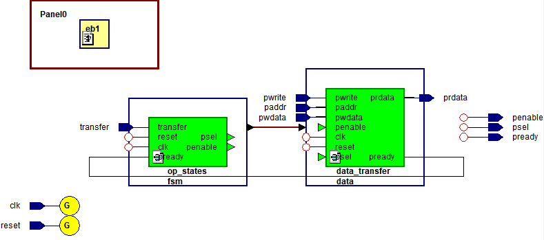
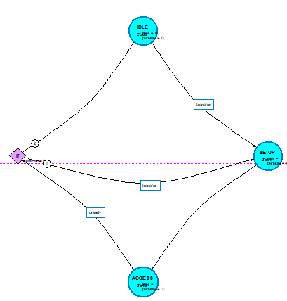
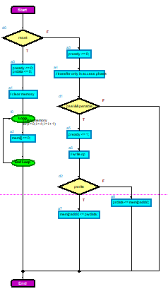
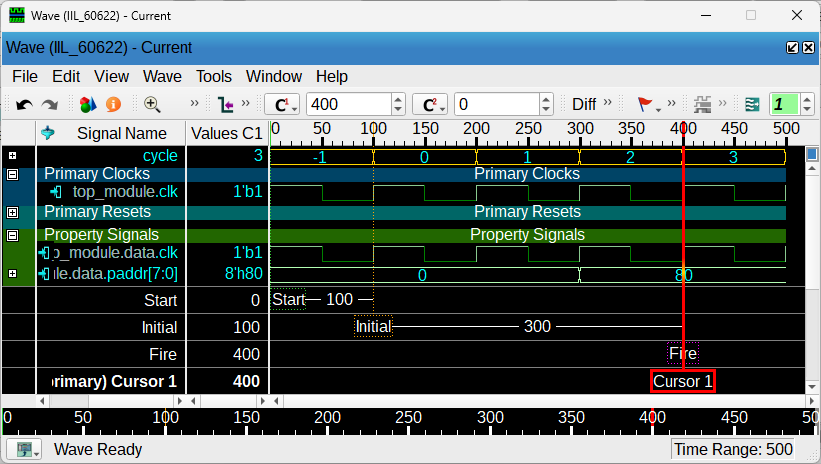
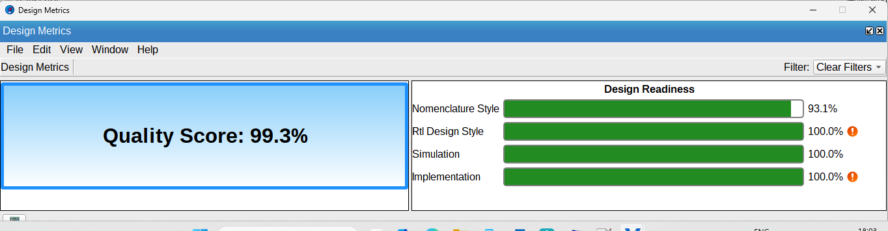

An end-to-end specification-to-validation workflow completed during my VLSI internship: interpreting the APB protocol, implementing a modular Verilog model within a defined scope, and checking the design through multiple verification methods.
ContextTrident Techlabs internship
DurationFeb — Jun 2026
LanguageVerilog HDL
ToolsSiemens Questa suite, HDL Designer
Overview & objective
Turning a protocol specification into testable RTL.
AMBA APB is a synchronous, non-pipelined protocol used for low-bandwidth communication between a processor and peripherals. The project focused on a single requester communicating with a single peripheral through a simulation-based model.
Objective
Design and implement APB at RTL level, beginning with the operating-state FSM.
Verify each module through static analysis, simulation, coverage review, and introductory formal checks.
Build a structured understanding of an industry verification flow.
Defined scope
One APB requester and one peripheral
Internal memory for simulated data storage
Read and write transactions
Advanced features such as multi-slave support and error-response logic excluded from the implemented scope
From specification to validation
The analytical process was part of the engineering work.
01 · Understand
Interpret the specification
Studied signal behaviour, read and write timing, wait states, error-response behaviour, and the IDLE, SETUP, and ACCESS operating model.
02 · Structure
Translate into modules
Broke the requirements into an Operating States module, a Dataflow module, and a Top module with clear responsibilities and interfaces.
03 · Validate
Compare expected and actual behaviour
Wrote testbenches, inspected waveforms, reviewed coverage, ran lint checks, visualised hierarchy, and explored formal checks.
What I built
Three modules with distinct responsibilities.
Operating States
A three-state FSM handling IDLE, SETUP, and ACCESS transitions based on PSEL, PENABLE, and PREADY.
Dataflow
Logic for read and write transfers using the APB control, address, and data signals, with PRDATA and PREADY outputs.
Top module
Integration of the state and dataflow modules into a complete simulated APB communication model.
Testbench
Directed stimulus used to exercise the design, inspect signal timing, and compare implemented behaviour with the expected protocol sequence.
Actual project evidence
Design and verification outputs.

HDL Designer block view of the integrated module hierarchy.

Operating States FSM showing the IDLE, SETUP, and ACCESS structure.

Dataflow-module flowchart used to inspect read and write behaviour.

Questa Inspect output used for introductory formal-verification work.

Questa Lint reported a 99.3% quality score after issue review and correction.
What the checks established—and what they did not.
Simulation: the observed sequence moved from IDLE to SETUP and ACCESS, then returned to IDLE after PREADY completed the transfer. The report records successful read and write checks.
Lint: Questa Lint reported a 99.3% quality score. The report attributes the remaining reduction mainly to naming-convention deviations and notes tool-launch warnings that did not affect functionality.
Coverage: all three FSM states were reached and 60% of transitions were tested. Lower toggle coverage indicated that the supplied test cases were not exhaustive.
Structure: HDL Designer views confirmed the module hierarchy, state transitions, and dataflow logic.
Formal exploration: Questa Inspect was used at an introductory level to review state behaviour and basic properties.
Careful claim: the project demonstrates the implemented and tested scope. The report identifies broader test coverage, PSLVERR, PPROT, PSTRB, and more complete error-condition testing as future work.
What I learned
Validation begins with a precise requirement.
The project strengthened my ability to read a dense technical specification, separate it into testable responsibilities, document expected behaviour, and investigate mismatches using evidence. It also showed me why a strong headline metric is not the same as complete validation: the coverage results made the remaining gaps visible and defined a practical next step.